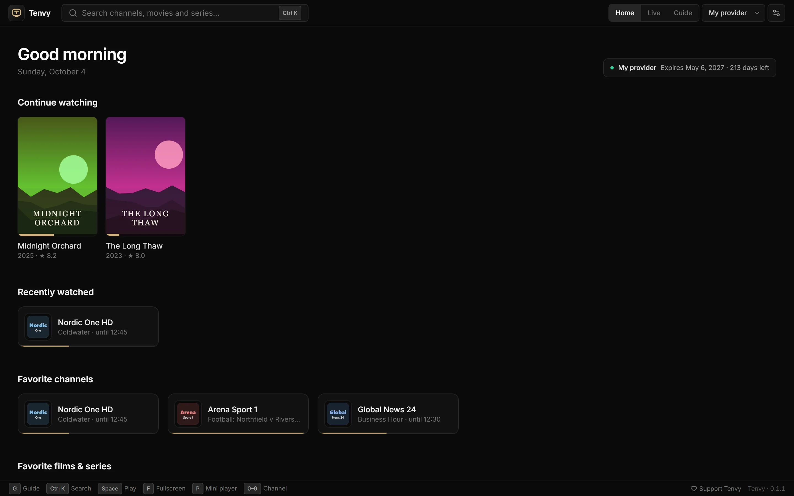

An IPTV Smarters alternative for Windows
Use IPTV Smarters on your phone or TV, but want something made for the PC? Tenvy is a free Windows IPTV player that takes the same login and gives you a full TV guide, catch-up, films and series.

Same login, nothing to set up again
IPTV Smarters and Tenvy use the same kind of login. Copy the server address, username and password (Xtream Codes) from Smarters or from your provider's email, or use your M3U link. Tenvy loads your channels, categories, guide, films and series from it.
Made for a PC
- Keyboard first — channel numbers, arrow keys to zap, Ctrl+K to search everything, F for fullscreen.
- A real guide grid with catch-up, reminders and search.
- Mini player in a small always-on-top window.
- Light on resources — playback through mpv, not a browser.
- Reconnects by itself when a stream drops, and tells you clearly when your subscription has expired or all your connections are in use.
Free, with no catch
Tenvy for Windows has no ads, no account, no tracking and no paid tier. It's updated regularly, and what people ask for on Discord decides what comes next.
Try Tenvy — it's free
Free. No ads, no account. Windows 10 and 11.
Questions
Can I use Tenvy and IPTV Smarters at the same time?
Yes, but many providers only allow one stream at a time per login. Tenvy tells you when all your connections are in use.
Does Tenvy work with my provider?
If your provider gives you an Xtream Codes login or an M3U link, yes. Tenvy doesn't include or sell any channels.